#10802 Wer den Wind sät
Alternativ: Inherit the Wind (Englischer Titel)
Auszeichnungen: für 4 Oscars nominiert
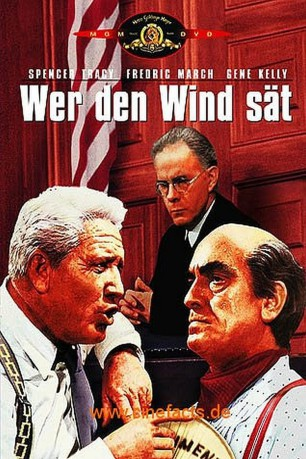 
 IMDB-Wertung: 8.2 / 10
IMDB-Wertung: 8.2 / 10  Metascore: 0
Metascore: 0 
Der Chicagoer Anwalt Henry Drummond und der als bibeltreue Volksheld liefern sich einen packenden Kampf der Ideologien. Auslöser ist der angeklagte Lehrer Bertram Cates, der seinen Schülern entgegen des Gesetzes die Evolutionstheorie von Charles Darwin vermittelte.
Jahr: 1960
Dauer: 122 Minuten
FSK: 12
Land: USA Studio: United ArtistsTonspuren:
Untertitel:
Auflösung: 720p (1280x720) Größe: 6512 MB
Genre: Drama, Geschichte, Biographie
Regisseur:  Stanley Kramer
Stanley Kramer
Drehbuch: Nedrick Young, Harold Jacob Smith, Jerome Lawrence, Robert E. Lee
Soundtrack: Ernest Gold
Darsteller:
 Spencer Tracy als Henry Drummond
Spencer Tracy als Henry Drummond- Fredric March als Matthew Harrison Brady
- Gene Kelly als E. K. Hornbeck
- Dick York als Bertram T. Cates
- Donna Anderson als Rachel Brown
 Harry Morgan als Judge Mel Coffey
Harry Morgan als Judge Mel Coffey- 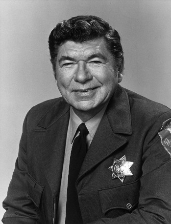 Claude Akins als Rev. Jeremiah Brown
- 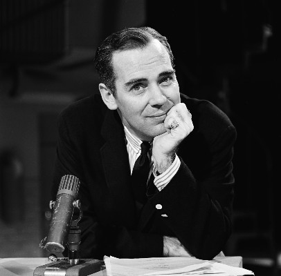 Elliott Reid als Prosecutor Tom Davenport
- Paul Hartman als Bailiff Mort Meeker
- Philip Coolidge als Mayor Jason Carter
- Jimmy Boyd als Howard
 Noah Beery Jr. als John Stebbins
Noah Beery Jr. als John Stebbins Norman Fell als WGN Radio Technician
Norman Fell als WGN Radio Technician- 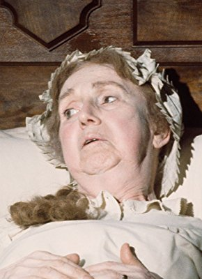 Hope Summers als Mrs. Krebs - Righteous Townswoman
 Ray Teal als Jessie H. Dunlap
Ray Teal als Jessie H. Dunlap- Renee Godfrey als Mrs. Stebbins
- Florence Eldridge als Sarah Brady
 Leon Alton als Townsman (uncredited)
Leon Alton als Townsman (uncredited) Don Anderson als Courtroom Reporter (uncredited)
Don Anderson als Courtroom Reporter (uncredited)- 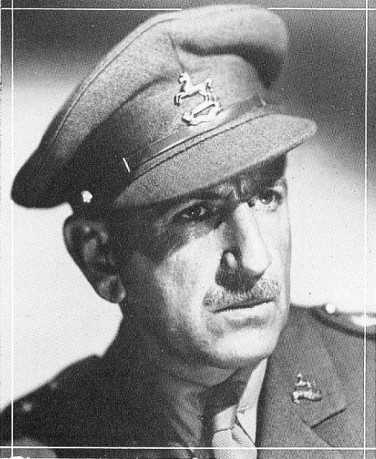 Frank Baker als Townsman (uncredited)
- 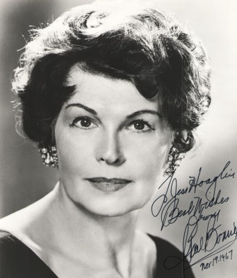 Gail Bonney als Fundamentalist Woman (uncredited)
 Chet Brandenburg als Courtroom Spectator (uncredited)
Chet Brandenburg als Courtroom Spectator (uncredited)- 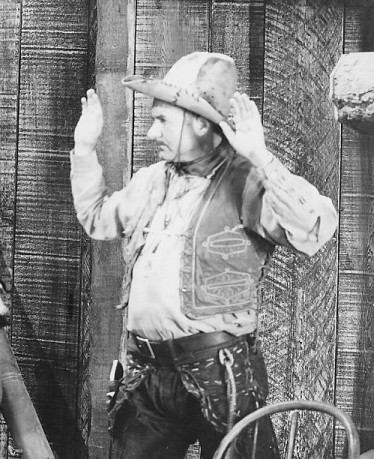 Ralph Bucko als Townsman (uncredited)
 Richard Deacon als Townsman (uncredited)
Richard Deacon als Townsman (uncredited) Lester Dorr als Dr. John (uncredited)
Lester Dorr als Dr. John (uncredited) Donald Elson als Bollinger (uncredited)
Donald Elson als Bollinger (uncredited)- 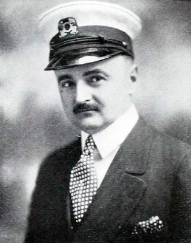 Adolph Faylauer als Courtroom Reporter (uncredited)
 Duke Fishman als Courtroom Spectator (uncredited)
Duke Fishman als Courtroom Spectator (uncredited)- David Fresco als Threatening Spectator (uncredited)
- Joseph Glick als Courtroom Spectator (uncredited)
 Stuart Hall als Dr. Amos Keller (uncredited)
Stuart Hall als Dr. Amos Keller (uncredited)- Earle Hodgins als Dr. Britton's Tonic Spieler with Chimp (uncredited)
 Colin Kenny als Courtroom Spectator (uncredited)
Colin Kenny als Courtroom Spectator (uncredited)- 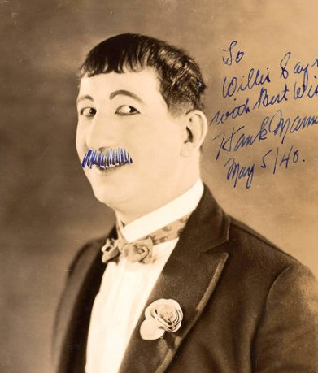 Hank Mann als Townsman (uncredited)
- Harp McGuire als Harry Esterbrook (uncredited)
 Frank Mills als Courtroom Spectator (uncredited)
Frank Mills als Courtroom Spectator (uncredited)- 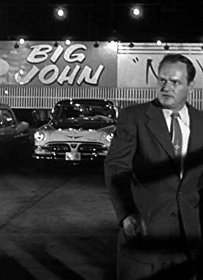 Robert Osterloh als Sam - Deputy Arresting Cates (uncredited)
 Joe Ploski als Courtroom Spectator (uncredited)
Joe Ploski als Courtroom Spectator (uncredited) 'Snub' Pollard als Townsman (uncredited)
'Snub' Pollard als Townsman (uncredited) Addison Richards als Townsman (uncredited)
Addison Richards als Townsman (uncredited)- 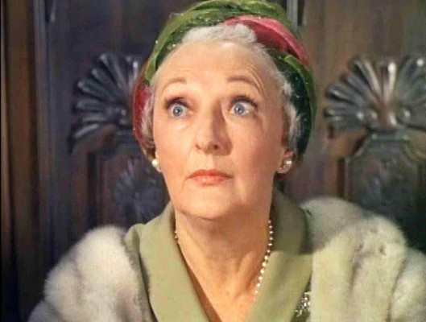 Leoda Richards als Woman Diner (uncredited)
- 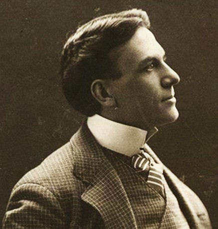 Scott Seaton als Courtroom Spectator (uncredited)
- 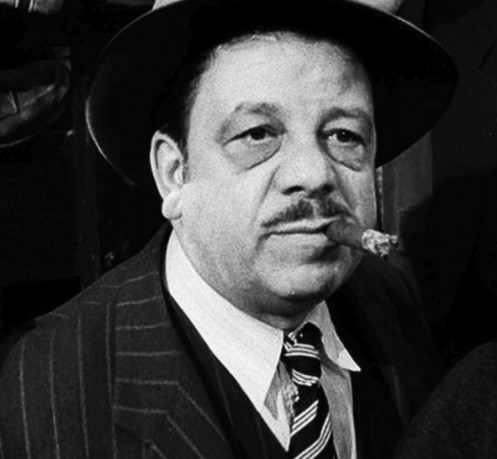 Stephen Soldi als Townsman (uncredited)
- Rudy Sooter als Courtroom Reporter (uncredited)
 Bert Stevens als Courtroom Spectator (uncredited)
Bert Stevens als Courtroom Spectator (uncredited)- 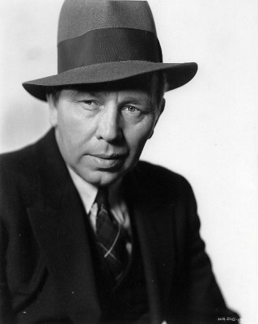 Harry Tenbrook als Courtroom Spectator (uncredited)
 Will Wright als Bible Salesman (uncredited)
Will Wright als Bible Salesman (uncredited)- Gordon Polk als George Sillers
- Eddie Baker als Courtroom Reporter (uncredited)
- John Barton als Townsman (uncredited)
Datei: X:\1960\Wer den Wind sät (1960, FSK12, 1280x720).mkv seit 08.03.2019
Festplatte: Gemischt-01+Anime
 Es gibt insgesamt 21 Filme in der Gruppe '1960'
Es gibt insgesamt 21 Filme in der Gruppe '1960'